Bienvenido/a a mi Portfolio!
Bienvenido/a a mi Portfolio!
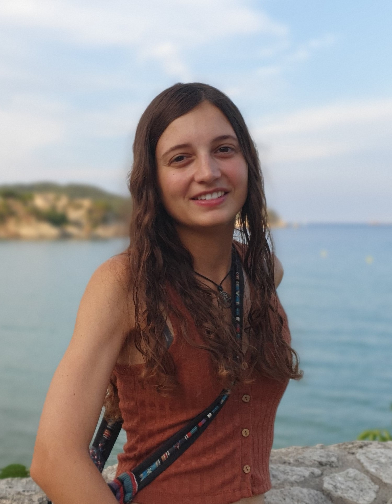
Hola, soy Cristina Recasens. Soy desarrolladora de software con un grado superior en Desarrollo de Aplicaciones Multiplataforma. Trabajo principalmente con Python, Java y SQL, y me interesa construir aplicaciones útiles y resolver problemas mediante código.
Tengo una base analítica sólida y una forma estructurada de abordar problemas complejos, además de un perfil interdisciplinar. Antes de entrar en el mundo del desarrollo estudié Biología y cursé un máster en Ecología Terrestre, donde me formé en estadística, modelización y análisis de datos con R y QGIS.
Me gusta desarrollar proyectos que combinan programación y datos para crear herramientas que transforman ideas en aplicaciones reales y funcionales.
Si quieres saber más sobre mi perfil, puedes descargar aquí mi currículum. ¡Hablemos!
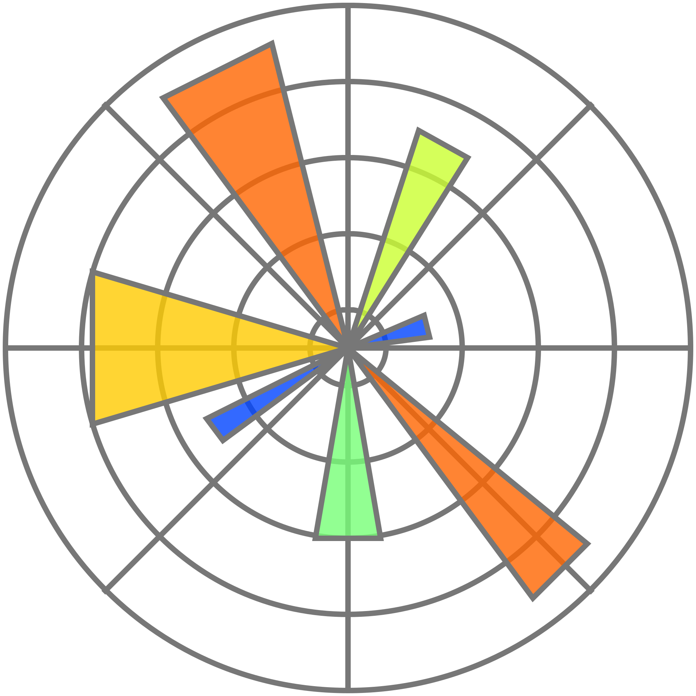
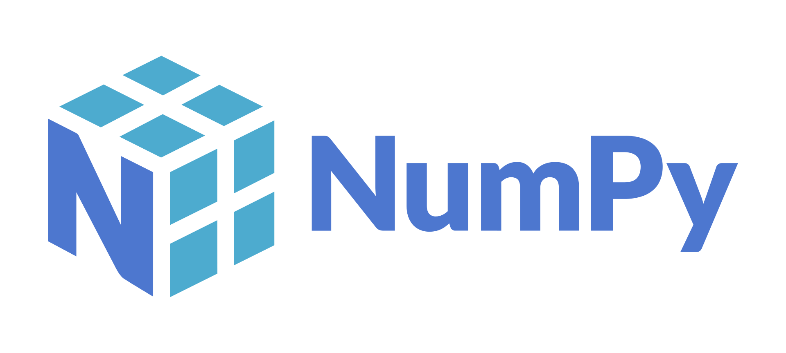
Desarrollo de una aplicación Python con Streamlit para el IRTA, que estima la fecha de consumo preferente de alimentos a partir de datos introducidos por el usuario y modelos estadísticos. La aplicación incluye visualización de gráficos con Matplotlib y procesamiento de datos con Pandas.
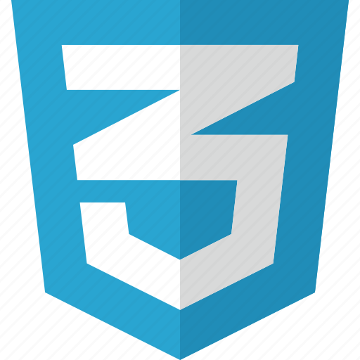
El sitio web permite a los usuarios explorar las 150 actividades programadas durante los tres días del festival, incluyendo talleres, concursos, xerrades, exhibicions, botigues i concerts. El sistema utilitza PHP i MySQL per gestionar les activitats, els comentaris i el registre d’usuaris.
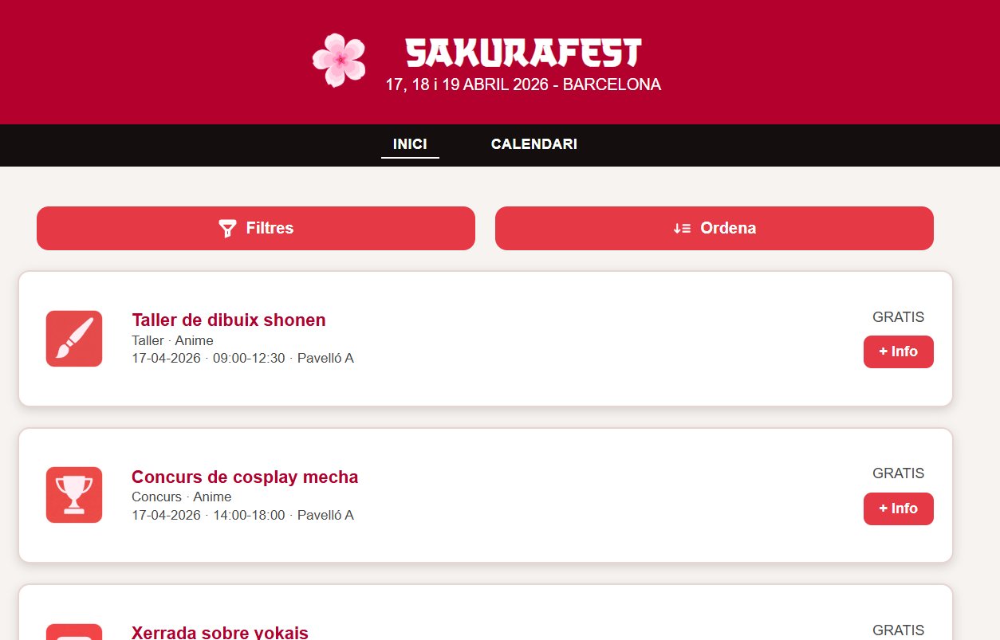
Diseño, desarrollo y despliegue del portfolio de la fotoperiodista Maria Limeres, con una interfície visual centrada en destacar el su treball fotogràfic. Utilitzant HTML, CSS i JavaScript.
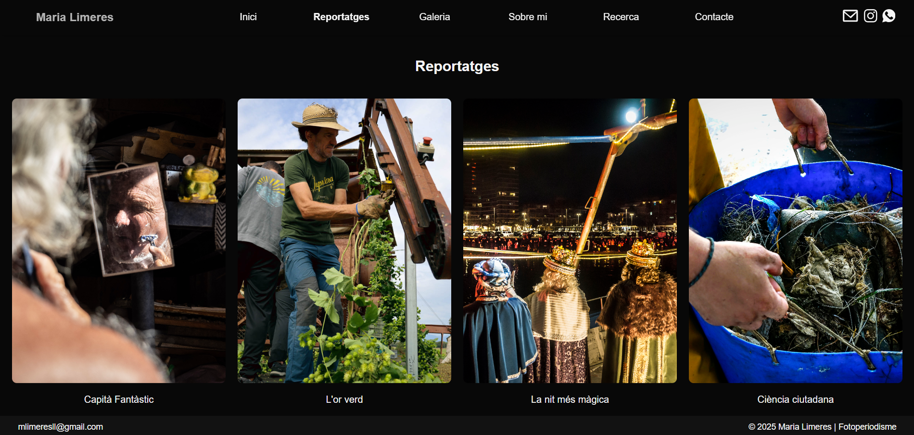
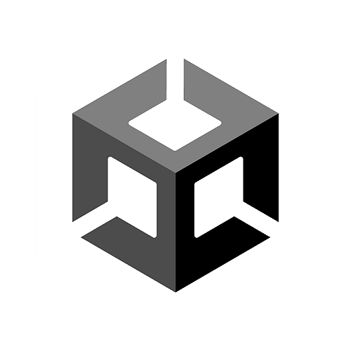
Juego senzillo inspirado en FlappyBirds que consiste en recoger la nubes blancas y esquivar las tormentas. ¿Cuántos puntos puedes hacer? Tienes la apk y el código disponible en mi github.
Aplicación para móvil Android en construcción para immobiliaria que permite entrar y visualizar propiedades en venta. Incluye sistema de login, formulario para introducir propiedades y visualización en mapa.
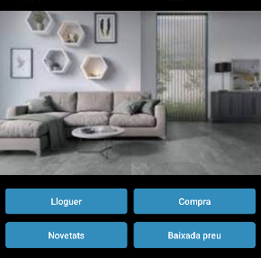
Análisis de datos estadísticos utilizando QGiS y R para determinar dinámicas de la población del jabalí en Collserola y la ciudad de Barcelona.
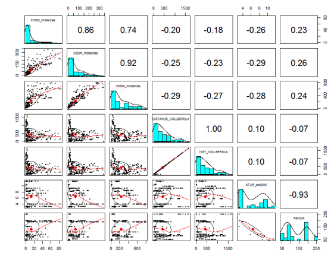
Análisis de datos estadísticos utilizando Excel para realizar un estudio del estado de conservación de los felinos a nivel mundial. Nota: 9.7
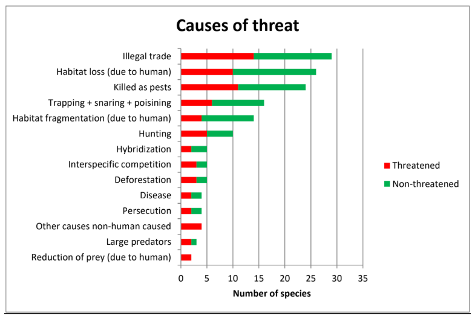
Python
Java
HTML5
CSS
JavaScript
PHP
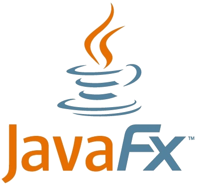
JavaFX
Kotlin
MySQL
Postgres
R
Pandas
NumPy
Matplotlib
QGIS
GitHub
Streamlit
Android Studio
Office
Septiembre 2023 - Actualidad
Grado superior de Desarrollo de aplicacions multiplataforma en el Instituto de Palamós. He aprendido desarrollo de aplicaciones con Java, Python y Kotlin. Además de aprender lenguajes de bases de datos como MySQL o PostgreSQL.
Septiembre 2016 - Septiembre 2017
Máster de estudios estadísticos y modelización aplicados a la gestión de biodiversidad. Gracias a este Máster he adquirido una base sólida de estadística y modelización a través de la aplicación de diferentes modelos y herramientas (como R y QGiS)
Septiembre 2011 - Junio 2015
Grado Universitario en Biología general, que me ha dado un ámplio conocimento sobre diferentes temas en relación a la vida y la ciencia. Donde realicé estudios de bioinformática, estadística y matemáticas.